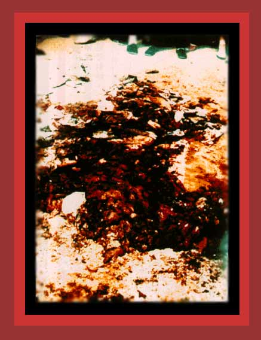

| The communist regime of China used many tanks against unarmed student demonstrators in the Tiananmen Square massacre of 1989. Here is shown the remains of a student crushed by one of them. Documentation: China's Bloody Century. Source: "TAM photo series: Massacre". |